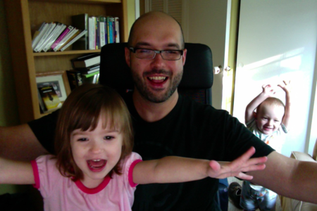

We're psyched to have had Fred Jean step aboard the good ship dojo4 this last month as a senior dev and help steer our little vessel on the stormy and ordered seas of code.
For those of you who don't already know Fred, he answered a few questions about how he came to us from la belle provence with a memorable accident and the majority of a theology degree:
Where are you from and how did you end up here?
"I grew up in Montreal and went back home after college. I was working in the IBM offices there when someone, who knew someone who knew someone who needed a French Canadian to man at a help desk referred me. I soon landed at the Denver International Airport in a snow storm and have been here since."
What kind of technologist are you?
"I was 3 credits short of getting a minor in Theology. This has definitively shaped how I think and approach technologies and projects. The irony of studying (and later rejecting) a dogma has helped me avoid a dogmatic approach to programming, architecture and technology in general."
What's your favorite thing about what you do for a living?
"We go from a vague, barely defined idea to a product or a service that can have an impact on many people and even change lives. There are very few careers where this can occur without extraordinary effort or capital. There is also the sheer excitement of doing things that many times have not been done before while following well travelled paths."
Tell us a little about your family and your life here in Colorado...
"We live a quiet life here in Colorado. Most of my family time revolves around playing Angry Bird and World of Goo with my 2 year old son and watching his twin sister sing and dance to her own song. It's a nice quiet life!"
What will your be known for 100 years from now?
"The downside of working with technology is that it is very transient. I suspect that I will have faded from our collective memory well before a 100 years from now. I might however be remembered by my great-great-grand-kids as this crazy old man that no one could understand due to his heavy accent."
If dojo4 was a desert island and you were stuck on it, what would you want to have with you?
"All the books that I want to read but can't quite seem to get to..."